| 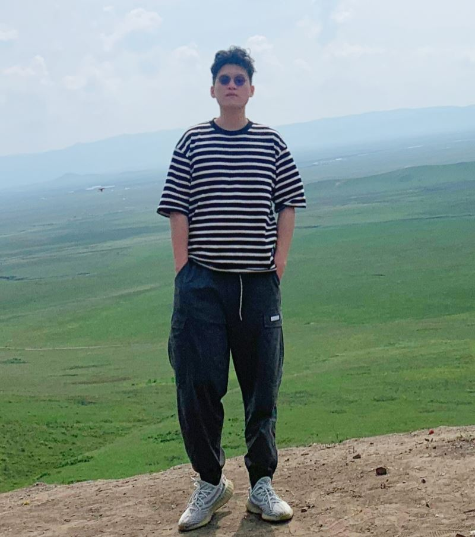 | Lirong Wu (吴立荣) |
Journals:
| 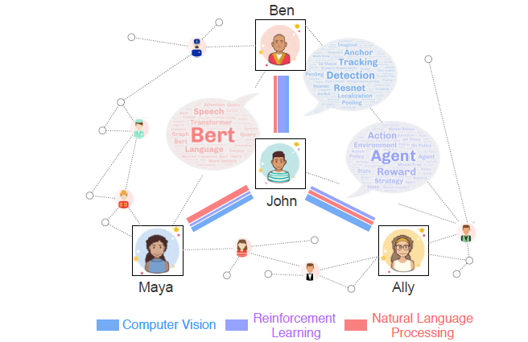 |
Multi-level disentanglement graph neural network |
| 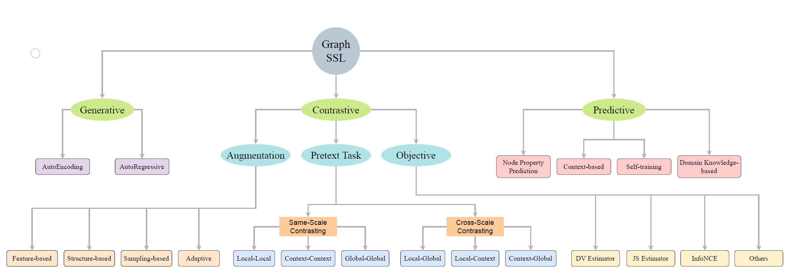 |
Self-supervised Learning on Graphs: Contrastive, Generative,or Predictive |
| 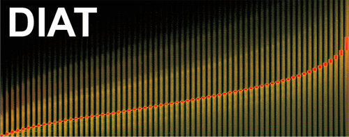 |
Phenotype classification using proteome data in a data-independent acquisition tensor format |
| 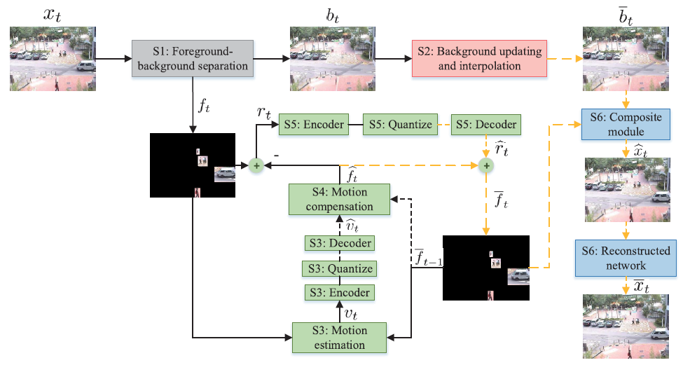 |
Foreground-background Parallel Compression with Residual Encoding for Surveillance Video |
Conferences:
| 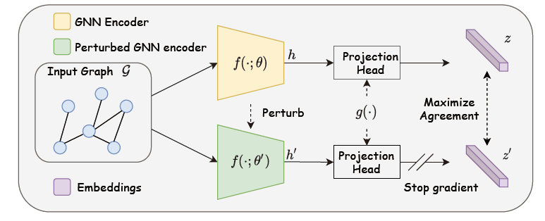 |
SimGRACE: A Simple Framework for Graph Contrastive Learning without Data Augmentation |
| 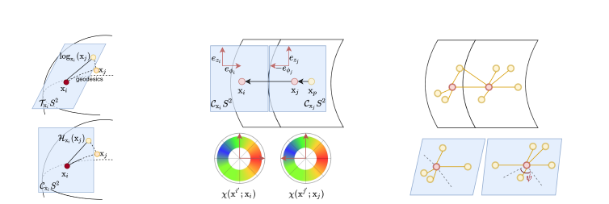 |
Conditional Local Convolution for Spatio-temporal Meteorological Forecasting |
| 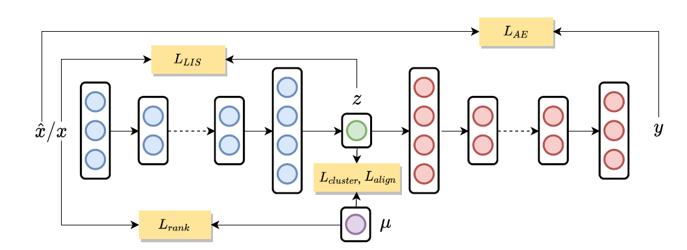 |
Generalized Clustering and Multi-Manifold Learning with Geometric Structure Preservation |
| 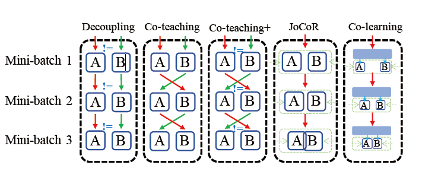 |
Co-learning: Learning from Noisy Labels with Self-supervision |
| 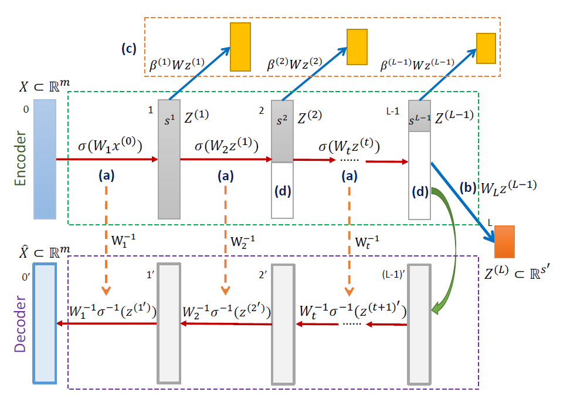 |
Invertible Manifold Learning for Dimension Reduction |
| 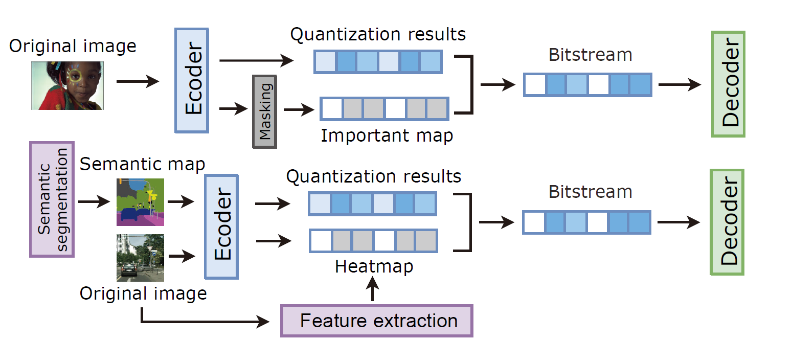 |
A Gan-based Tunable Image Compression System |
Membership:
Reviewer: